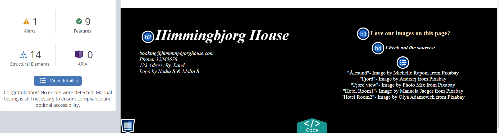
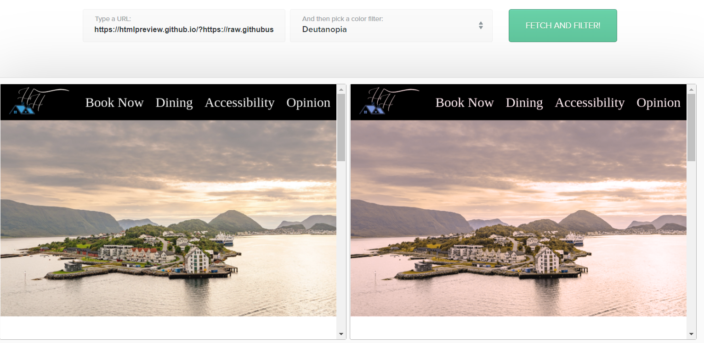

Accessibility
To test our code we used the WAVE evaluation tool, toptal's color filter tool, W3's CSS and HTMl validators, and achecker. We wanted our website to be intuitive and easy to navigate, with the correct tags for screen-readers. We wanted buttons to be pressable and text to be readable, whilst staying true to our vision for a sophisticated hotel. Our approach to universal design was to have a clean consistent design through the pages. We deliberately used elements with a lot of activity to be paired with spaces of non-activity as to not overwhelm people with for example ADHD. For example, the gif of the fireplace in the index pages is surrounded by black and some short text, instead of bright colors and lots of information. We tried to create a logical structure in the html and in the design whilst also making the website inviting and interesting.
Due to the fact that we are still learning, it was difficult for us to implement some features of universal design we would have liked to. Designing an elegant keyboard navigation system would have been ideal but out of our range of skills. We have no pop-ups or time-out features, but these would have been approached with the plan of conforming to AA standards.
Wave tests & fixes:
We correctly formatted the address (and changed it again later to the final product):
CSS test:
We had some issues with merging. Fixed:
HTML test:
Booking page had 12 errors:

Fixed errors:
Cafe page had many repeat problems with our use of the br tag:
Fixed errors:
Toptal Test
Due to the fact that all our headings are in white and our backgrounds are dark, important information was always readable (when checking all types of color-blindness), contrast was important to us from the beginning, and readability was an integral part of our design.
Flashing Images
Due to the fact that we only used one instance of script (flashing), we made sure that our automatic slideshow changed images after every 4 seconds to ensure that it wouldn't cause seizures.